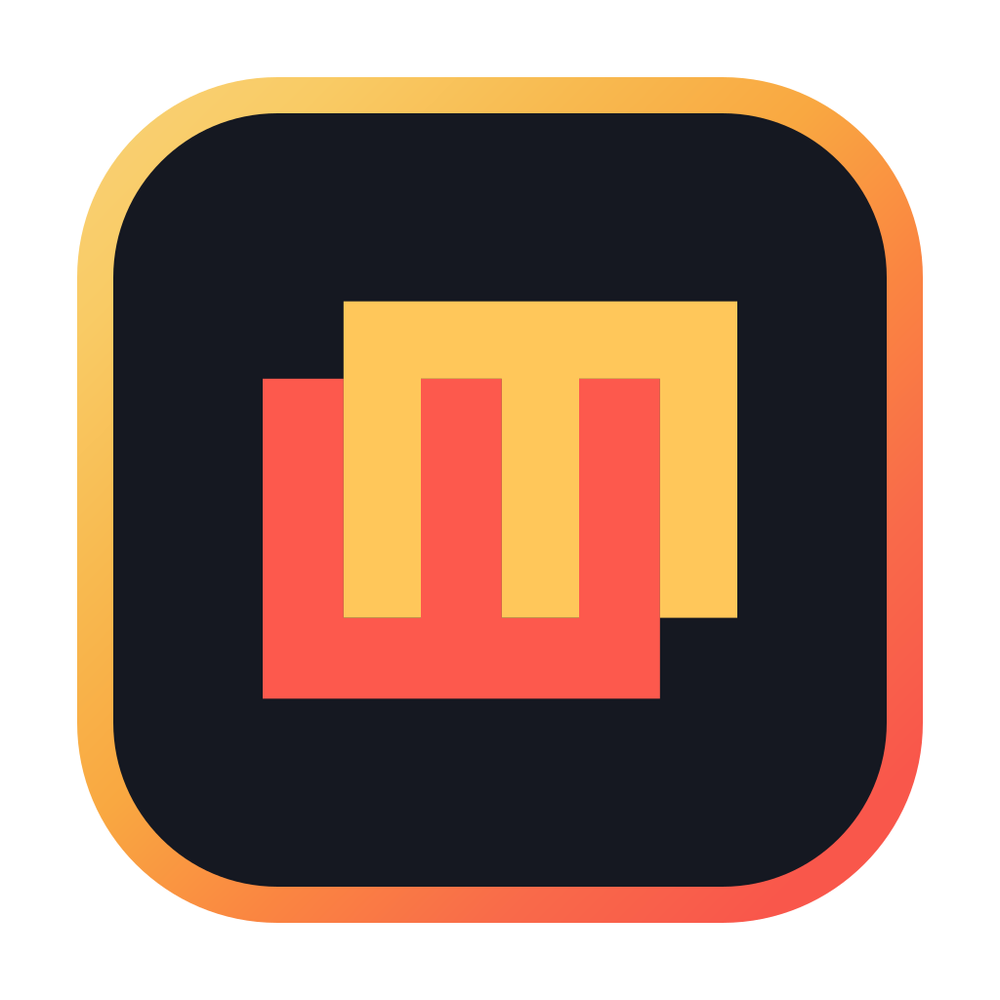

Variants of the open pinwheel set in the current macOS app-icon frame: the same 866 px rounded tile, amber-to-coral ring and #151821 ground. Each variant also comes in black and white. The second group draws the pinwheel with JetBrains Mono characters, the app's monospace font, on a terminal-style grid, with the letterforms converted to outlines. The current icon is on the left for reference.